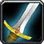

Le Chaman Amélioration est une classe au corps à corps hybride qui combine à la fois DPS avec ses armes, et aussi dps avec des sorts. Il possède un burst puissant en monocible, mais pas en multicible et apporte plusieurs auras à son groupe.
C'est une classe polyvalente et accessible nécessitant de l’anticipation dans la gestion des totems.
En PvP c'est une des spécialisation les plus dure à jouer, car cette classe n'a pas de controle, mis à part un contre sort avec l'horion de terre. C'est une spécialisation qui a peu de survie par contre et qui dépend de l'armure de l'ennemi.
Elle est très utile en bg, mais pas très opti pour de la 2c2 en arène. Par contre elle sera plus adapté pour de la 3c3 ou 5c5 de part sa polyvalence.
Vous pouvez jouer avec une arme à deux mains, ou deux armes à une main. Sur le long terme, les deux armes à une main sont plus rentable. Alors que l'arme à deux mains offre elle un burst dps sur le court terme, surtout avec le proc Furie-des-vents.
Certains utilisent les deux, c'est à dire les armes à une mains sur un combat et switch arme à deux mains pour finir un ennemi.
 LES SORTS LES PLUS UTILISÉS
LES SORTS LES PLUS UTILISÉS
De dégâts
 Frappe-tempête
Frappe-tempête Horion de terre (pour contrer un sort pendant l'incantation)
Horion de terre (pour contrer un sort pendant l'incantation) Horion de givre (pour ralentir)
Horion de givre (pour ralentir) Horion de flammes (empêcher qu'un rogue/druide se camoufle)
Horion de flammes (empêcher qu'un rogue/druide se camoufle) Arme de givre (sur l'arme main gauche)
Arme de givre (sur l'arme main gauche) Totem incendiaire
Totem incendiaireDe soutiens
 Loup fantome (attraper quelqu'un rapidement au corps à corps
Loup fantome (attraper quelqu'un rapidement au corps à corps Guérison du poison
Guérison du poison Totem de Glèbe (Pour éviter de prendre un sort)
Totem de Glèbe (Pour éviter de prendre un sort) Totem de Purification du poison (Super utile contre les voleurs)
Totem de Purification du poison (Super utile contre les voleurs) Totem de lien terrestre (Pour ralentir plusieurs joueurs)
Totem de lien terrestre (Pour ralentir plusieurs joueurs) Totem de Force de la Terre
Totem de Force de la Terre Totem de Grâce aérienne
Totem de Grâce aérienne Totem Fontaine de mana (En cas de mana faible)
Totem Fontaine de mana (En cas de mana faible) Totem de peau de pierre (peu utilisé mais peut être utile parfois contre des cac)
Totem de peau de pierre (peu utilisé mais peut être utile parfois contre des cac) Totem Furie-des-vents (Utile seulement si un guerrier allié est dans votre groupe et qu'il soit dans les parages)
Totem Furie-des-vents (Utile seulement si un guerrier allié est dans votre groupe et qu'il soit dans les parages) Totem de Mur des vents
Totem de Mur des vents
 Les caps et stats
Les caps et statsRappel : Un cap par définition c'est la valeur à partir de laquelle vous n'avez plus aucun intérêt à monter une statistique.
Expliquées par ordre de priorité :
La puissance d'attaque
C'est une stat importante qui n'a pas de cap. Plus vous en avez, mieux c'est. Mais ça ne veut pas dire qu'il faut up QUE cette stat. montez les autres aussi.
Cette stat s'augmente avec de préfèrence de la Force (car elle augmente aussi le score de blocage). Avec 900 de Puissance d'attaque au début vous commencerais à être bien. Ensuite avec le stuff vous monterez vers 1700 de puissance d'attaque unbuff.
Le critique
C'est une stat importante à monter, car c'est cette stat qui vous permet, grace à vos critiques, de vous faire proc le talent  Rafale qui augmente votre vitesse d'attaque de 30%, cela vous fait proc aussi le talent Rage libérée qui augmente de 10% votre puissance d'attaque et pour finir ça vous fait proc aussi le talent Focalisation chamanique qui réduit de 60% le coup en mana de votre prochain Horions.
Rafale qui augmente votre vitesse d'attaque de 30%, cela vous fait proc aussi le talent Rage libérée qui augmente de 10% votre puissance d'attaque et pour finir ça vous fait proc aussi le talent Focalisation chamanique qui réduit de 60% le coup en mana de votre prochain Horions.
Il sera donc non seulement une source non négligeable de dps, et de boost au niveau des stats, mais également une source d'économie de mana pour les horions.
Il ne va pas falloir prioriser non plus cette stat, car le cap est de 33% et si vous vous focalisez sur cette stat vous perdrez en puissance d'attaque. Donc 28%-30% suffise. En PvP il vous faut au moins atteindre les 17% de coup critiques de base au début. La vous ferez déjà quelques critiques.
Le toucher
Tout d'abord il faut comprendre que le toucher vous permet d'éviter "les ratés" quand vous frappez vos ennemi que ce soit avec vos coups blanc, votre technique Frappe-tempête ou même le proc Furie-des-vents peut faire un raté.
En PvP contre une cible de même niveau vous devrez "théoriquement" avoir 5% de toucher, et les armes une main vous donnent 0,63% de toucher (soit 1,26% pour deux armes) alors que l'arme à deux mains donne 1,14%, et vous montez à 3% de toucher (sans les talents) avec l'enchant de tête de la réputation Expédition cénarienne. donc il vous manque 2% ce qui n'est pas énorme. Le score de toucher n'est qu'une stat optionnelle. Si par contre vous avez prit le talent Spécialisation Ambidextrie (pour les joueurs avec deux armes une main) Vous avez largement ce qu'il faut en toucher pour PvP.
le cap est à 5% pour coups jaunes et arme 1M, 24% pour amibdextrie
Si vous estimez toute fois que vous faites beaucoup de "raté", essayez d'augmenter votre toucher légérement.
La résilience
Cette stat est importante en PvP, surtout pour la spé amélioration, vue que vous n'avez pas une grande survie. Elle diminue les dégâts des sources de dégâts périodiques (DOT) et les chances de recevoir un coup critique. Diminue aussi les effets des drains de mana et les dégâts des coups critiques.
Pour faire simple le cap de la résilience est de 492.5, au dessus de 500, la résilience ne diminue plus les chances de recevoir un coup critique (diminué de 25% au max). Mais il n'y a pas de cap résilience pour la diminution des dégâts des DOT.
Plus vous la montez, plus vous aurez de survie. Pensez aux reliques totems qui monte votre résilience quand vous utilisez vos Horions ou celui lié à votre Frappe-Tempête.
L'endurance
C'est la Stat de la survivabilité, assez importante en PvP. à monter en second plan à la fois avec le stuff mais aussi avec quelques enchant / gemmes, si vous en avez la possibilité.
Vous pouvez mettre deux gemmes critique - endu (gemme rouge / bleue) si vos critiques vous conviennent, pour activer votre méta (voir plus bas).
Pénétration d'armure
Une stat de base utile, qui vous permettra d'ignorer l'armure de votre adversaire. Utile surtout contre les classes à grosse armure, comme le guerrier ou paladin. En PvP c'est la stat que vous monter avec votre stuff. Donc inutile d'en dire plus.
L'expertise
Cette stat ci, comparé au toucher, diminue les chances qu'on esquive ou pare vos attaques de mêlée. C'est à dire que plus vous avez du score d'expertise, moins l'ennemi va esquiver et / ou parer vos attaques.
C'est surtout une stat PvE, mais contre un rogue qui à beaucoup d'esquive, ça peut être utile. Il y a un bijou à la Terrasse des magistère en héroïque qui à du score d'expertise, inutile donc de s'étendre sur le sujet.
Il n'y a pas de "cap" pour cette stat qui est vraiment optionnelle.
Agilité
Stat utile, mais pas rentable pour qu'on la monte. c'est une stat à monter avec le stuff, qui vous donnera un peu d'esquive et du critique.
Le score de hate
C'est ce qui vous accélère la vitesse d'attaque.
Cette stat est inutile en PvP, Sachant que vous avez déjà un talent qui vous accélère la vitesse d'attaque.
C'est une stat utile qu'en PvE.
 L'arbre de talent
L'arbre de talentAvant de commencer vous pouvez voir les talents chaman sur ce site
Les points importants dans la spé Amélio sont :
Loup fantôme amélioré Rafale Résistance Frappe-tempête
Résistance Frappe-tempêteVous pouvez cliquer sur les images pour les agrandir.
La meilleur spé by Kalameet

Sinon, vous avez le choix entre le coté défensif en restauration 0/46/15, qui offre la possiblité de pouvoir se heal sans trop perdre au niveau incantation.

Ou alors le coté offensif en élémentaire 15/46/0, qui offre les horions à 5 secondes de cooldown.

Petite variante 18/43/0 qui vous donne accès à quelques plus.

Vous perdez ici :
 Maîtrise des armes : Augmente de 10% les dégâts que vous infligez avec toutes les armes (5/5).
Maîtrise des armes : Augmente de 10% les dégâts que vous infligez avec toutes les armes (5/5).
C'est un compromis, mais rentabilisé par le dps avec les Horions.
Bouclier de foudre amélioré : Augmente de 15% les dégâts infligé par les orbes de votre bouclier de foudre (3/3).
C'est un sort qui peux vous pomper la mana, donc c'est pas une grosse perte.
On a rajouté :
Totems gardiens : Augmente de 20% le nombre de points de dégâts absorbés par votre Totem peau de pierre et votre Totem de Mur des vents et réduit le temps de recharged e votre Totem de Glèbe de 2 sec (2/2).
Un talent qui peut s'avérer utile pour votre survie.
Protection contre les éléments : Réduit les dégâts que vous infligent les sorts de Feu, de Givre et de Nature de 10% (3/3).
Très utiles contre les casters. Ce qui vous donnera un peu plus de survie
Emprise de la terre : Augmente le rayon de votre totem lien terrestre de 20% (2/2).
Talent utile lorsqu'on veux ralentir avec son totem plus loin, surtout quand quelqu'un vous tient à distance.
Réverbération : Réduit de 1 seconde le temps de recharge de vos horions (5/5).
Talent nickel pour enchainer les horions, et utile pour les décast.
Focalisation élémentaire : Après avoir réussi un coup critique avec un sort de dégâts, réduit de 40% le prochains sort de dégâts.
Même si vous allez faire peu de critiques des sorts, ça peux vous servir pour conserver de la mana. Mais c'est pas un gros plus.
Dévastation élémentaire : Après avoir réussi un coup critique avec un sortde dégâts, Augmente de 9% vos chance de faire un coup critique avec les attaques de mêlée pendant 10 sec (3/3).
Si vous n'avez pas trop de critique, c'est un talent qui peut beaucoup aider.
 Les gemmes
Les gemmesPour ce qui est des enchants et gemmes il vous faut du critique, de la force et si possible de l'endurance, voir de la résilience.
La première méta est selon moi la meilleur méta avec l'enchant pied sûr sur Bottes si vous avez deux armes à une main, Car l'augmentation des dégâts critiques ne va pas vous apporter beaucoup sur ce type d'arme.
Par contre sur une compo avec une arme à deux mains, la seconde méta peut être rentable, car vous faites bien plus de dégats avec cette arme. Néanmoins vous pouvez toujours utiliser la première méta avec une arme à deux mains, car l'enchant Pied sûr est OP, et qu'il va falloir le sacrifier par un autre enchant à vitesse de course, parce que vous avez absolument besoin d'une vitesse de course.
 Méta-gemme Diamant brûleciel de rapidité : +24 à la puissance d'attaque et légère augmentation de la vitesse de course
Méta-gemme Diamant brûleciel de rapidité : +24 à la puissance d'attaque et légère augmentation de la vitesse de course
Il vous faut 2 gemmes jaunes et 1 gemme rouge pour pouvoir l'activer
 +10 critique
+10 critique +8 Force, ou
+8 Force, ou  +10 Force
+10 Force Méta-gemme Diamant tonneterre implacable : +12 Agilité et +3% aux dégâts des critiques
Méta-gemme Diamant tonneterre implacable : +12 Agilité et +3% aux dégâts des critiques
Il vous faut 2 gemmes Bleues, 2 gemmes rouges et 2 gemmes jaune pour l'activer
Si vous voulez monter votre critique optez pour cette compo :
+10 critique +8 Force, ou +10 Force +4 Force +6 Endurance, ou
+4 Force +6 Endurance, ou  +5 Force +7 Endurance x2
+5 Force +7 Endurance x2Sinon passez à cette compo :
+10 critique +8 Force, ou +10 Force +4 critique +6 Endurance, ou
+4 critique +6 Endurance, ou  +5 critique +7 Endurance x2
+5 critique +7 Endurance x2 Les enchantements
Les enchantementsPar ordre de priorité
Casque
Arcanum du gladiateur (+18 Endurance et +20 au score de résilience) Réputation Opération Soleil brisé Amical.
Glyphe de férocité (+34 à la puissance d'attaque, +16 au toucher) Réputation Expédition cénarienne Révéré.
Arcanum du paria (+17 Force, +16 Intelligence) Réputation Ville basse Révéré.
Epaules
Calligraphie superieures de supérieure de vengeance (+30 à la puissance d'attaque, +10 score de critique) Exalté Aldor
Calligraphie supérieure de la lame (+20 à la puissance d'attaque, +15 score de critique) Exalté Clairvoyant
Calligraphie de vengeance (+26 à la puissance d'attaque) Honoré Aldor
Calligraphie de la lame (+13 score de critique) Honoré Clairvoyant
Torse
Pts vie exceptionnels (+150 point de vie)
Résilience majeur (+15 résilience)
Carac. exceptionnelles (+6 à toutes les caractéristiques)
Brassards
Masse musculaire (+12 Force)
Robustesse (+12 Endurance)
ou à la limite Caractéristiques (+4 à toutes les caractéristiques)
Cape
Pénétration des sorts (+20 Pénétration des sorts) Peut vous éviter des résistes à vos horions
Agilité supérieure (+12 Agilité)
ou à la limite Résistance majeure (+7 à toutes les résistances)
Armure majeure (+120 armure)
Jambes
Craft par un Travailleur du cuir
Armure de jambe de cobra (+50 Puissance d'attaque, +12 critique)
Armure de jambe de faille du Néant (+40 Endurance, +12 Agilité)
Armure de jambe en peau de cobra (+40 Puissance d'attaque, +10 critique)
Armure de jambe en cuir-fourchu (+30 Endurance, +10 Agilité)
Gants
Force majeure (+15 Force)
Assaut (+26 Puissance d'attaque)
La Force reste plus rentable, car elle augmente aussi le score de blocage.
Pieds
Pied sûr (+10 toucher et Augmente de 5% la résistance à ralentir et à immobiliser)
Dextérité (+12 Agilité)
Robustesse (+12 Endurance)
Rapidité du félin (+6 Agilité et augmentation de la vitesse de course)
Vitesse du sanglier (+9 Endurance et augmentation de la vitesse de course)
Tout dépend de votre méta gemme puisque l'augmentation de la vitesse ne se cumule pas.
Bagues
Si vous avez enchantement
Caractéristiques (+4 à toutes les caractéristiques)
Arme
Si vous avez deux armes à une main
Double Mangouste (Proc qui augmente l'Agilité de 120 et la vitesse d'attaque) peut être bien
ou vous pouvez mettre en main gauche Exécutrice (Bourreau) (Proc qui ignore 840 points d'armure de votre adversaire)
Si vous avez une arme à deux mains
Sauvagerie (+70 puissance d'attaque)
Exécutrice (Bourreau) (Proc qui ignore 840 points d'armure de votre adversaire)
Mangouste (Proc qui augmente l'Agilité de 120 et la vitesse d'attaque)
Bouclier
Résilience (+12 résilience)
Endurance majeur (+18 endurance)
Intelligence (+12 intelligence)
Résistance (+5 à toutes les résistances)
 Combats face aux autres classes
Combats face aux autres classes Guerrier
Le war à l'avantage d'être plus résistant, donc très dur à battre. Il faut pouvoir s'éloigner pendant le combat pour se placer un heal ou deux, si vous ne pouvez pas lancez un heal avec un fake cast (c'est à dire que vous allez simuler une incantation pour la stoper de vous même), car il va tenter de vous court circuiter en vous décastant avec une  volée de coups ou un
volée de coups ou un  coup de bouclier (les deux ont un temps de recharge associé). Si vous y arrivez, vous allez pouvoir vous heal plusieurs fois tranquillement. Mais le mieux est de s'éloigner pour ne plus avoir le débuff de la technique
coup de bouclier (les deux ont un temps de recharge associé). Si vous y arrivez, vous allez pouvoir vous heal plusieurs fois tranquillement. Mais le mieux est de s'éloigner pour ne plus avoir le débuff de la technique  Frappe mortelle, qui diminue tout les heals de 50% pendant 10 sec.
Frappe mortelle, qui diminue tout les heals de 50% pendant 10 sec.
Vous allez direct mettre votre bouclier et le ralentir avec Horion de givre et le Totem de lien terrestre, une fois Frappe-tempête appliqué, vous allez reswitch votre bouclier (Surtout si il a activé  Témérité, pour prendre moins de dégâts), et tenez le à distance avec votre Horion de givre et votre Loup fantôme. Une Fois les Cooldowns offensif du war fini, remettez vos deux armes (Macro) et essayez de lui bourriner la face.
Témérité, pour prendre moins de dégâts), et tenez le à distance avec votre Horion de givre et votre Loup fantôme. Une Fois les Cooldowns offensif du war fini, remettez vos deux armes (Macro) et essayez de lui bourriner la face.
Si vous sentez que vous prenez chère en phase de dps (sans bouclier), n'hésitez pas à activer votre Rage du chaman qui va réduire de 30% les dégâts que vous allez prendre, ce qui n'est pas négligeable. Vous pouvez aussi mettre un Totem de Force de la Terre et un Totem de Grâce aérienne pour booster votre dps et un peu votre esquive.
Vous pouvez mettre un Totem de peau de pierre qui fera en sorte que vous preniez légèrement moins chère, mais aussi ajouter un Totem de Séisme, si il commence à mourrir, pour vous sortir du fear qu'il risque de lancer. Mais n'oubliez pas qu'il faut le ralentir constamment, sinon il va en profiter pour se mettre légèrement à distance et vous charger avec son  Interception qui va vous étourdir pendant 3 secondes.
Interception qui va vous étourdir pendant 3 secondes.
 Paladin
Paladin
Si c'est un Heal :
Vous n'avez qu'à l'enchainer, et faire gaffe aux incantations de soins à décast avec l'Horion de terre.
Vous pouvez poser un Totem de Glèbe pour éviter de prendre un  Marteau de la justice et être étourdi.
Marteau de la justice et être étourdi.
Une fois presque mort le paladin, va utiliser  bouclier divin (bubule), ce qui le rend invulnérable, donc profitez en pour vous remonter la vie et / ou regen votre mana.
bouclier divin (bubule), ce qui le rend invulnérable, donc profitez en pour vous remonter la vie et / ou regen votre mana.
Si c'est un Paladin Vindicte(Palret) :
Il faudra le bourriner et le ralentir sans cesse. Le paladin à une  bénédiction de liberté qui annule et empêche tous ralentissement, mais ce sort est dispellable avec Expiation. En plus de ça, il a de quoi dispel vos Horions (Inutile de lui mettre des Horions de flammes). Du coup il va falloir être plus malin pour le ralentir en jouant avec l'Horion de givre et le Totem de lien terrestre.
bénédiction de liberté qui annule et empêche tous ralentissement, mais ce sort est dispellable avec Expiation. En plus de ça, il a de quoi dispel vos Horions (Inutile de lui mettre des Horions de flammes). Du coup il va falloir être plus malin pour le ralentir en jouant avec l'Horion de givre et le Totem de lien terrestre.
Vous pouvez mettre votre bouclier à chaque fois que vous sentez qu'il va utiliser sa technique Inquisition. Il vous controlera avec  Repentir, mais sur la durée c'est vous qui gagnez si vous savez le fatiguer, car un palret tombe vite sans mana et surtout parce que votre dps est supérieur au sien.
Repentir, mais sur la durée c'est vous qui gagnez si vous savez le fatiguer, car un palret tombe vite sans mana et surtout parce que votre dps est supérieur au sien.
N'hésitez pas à spam le Totem de glèbe pour éviter de vous prendre le Marteau de la justice et le Repentir.
Une fois presque mort le paladin, va utiliser bouclier divin (bubule), ce qui le rend invulnérable, donc profitez en pour vous remonter la vie et / ou regen votre mana.
Si c'est un Mageladin(Shockadin) :
Il vous faudra procéder à la même technique que le Palret. Mais attention les phases de dps du mageladin sont plus espacé, mais plus intense.
Ayant de gros dégâts des sorts, il va falloir faire en sorte qu'il ne se  Heal pas. Sinon c'est mort pour vous.
Heal pas. Sinon c'est mort pour vous.
Une fois presque mort le paladin, va utiliser bouclier divin (bubule), ce qui le rend invulnérable, donc profitez en pour vous remonter la vie et / ou regen votre mana.
 Chaman
Chaman
Si c'est un Chaman Élémentaire :
Il vous faut avoir le dessus au niveau des décast avec l'Horion de terre, et de pas vous faire ralentir au début grace au Totem de Glèbe. Vous allez vous faire ralentir sans cesse et tenir à distance, donc essayez d'avoir le dessus et de rester au cac.
Utilisez votre Totem de lien terrestre quand vous êtes pas trop loin de lui et votre Loup fantôme pour le rattraper. Un Totem incendiaire peut vous aider à le gêner dans l'incantation de ses sorts.
Si c'est un Chaman Amélioration :
Éequipez direct votre bouclier pour encaisser les premiers dégats de la Frappe-tempête de l'ennemi. Une fois fait, ré-équipez vos deux armes (ou votre arme à deux mains), et à vous de le dps.
Si vous avez du retard niveau dps par rapport à lui, posez votre Totem de glèbe, déplacez vous en le ralentissant avec votre Horion de givre et incantez un heal ou deux.
Si c'est un Chaman Heal :
Il vous suffit comme tout heal de gérer le décast de ses heals, et de placer votre Totem de Glèbe pour éviter que lui vous décast pendant vos heals ou qu'il vous ralenttisse. N'hésitez pas à dispell son Bouclier de terre.
 Chasseur
Chasseur
Si c'est un Chasseur Survie ou Précision :
Ce qu'il vous faut c'est essayer de rester au corps à corps, car si vous ne l'êtes pas, il va pouvoir vous dps et pas qu'un peu. il va falloir le ralentir avec l'Horion de givre et le Totem de lien terrestre, car le chasseur vous ralentira aussi avec  Coupure d'ailes et son
Coupure d'ailes et son  Piège de givre.
Piège de givre.
Vous pouvez poser un Totem de purification du poison et / ou utiliser Guérison du poison pour éviter les poisons du chasseur, notamment la Morsure de vipère qui vous pompe la mana ou le controle avec la  Piqûre de wyverne.
Piqûre de wyverne.
Le Totem de Mur des vents va vous être aussi très utile.
Si c'est un Chasseur spé Bête :
Il va vous mettre très chère, et il ne vous est pas possible de le ralentir une fois son  Courroux bestial utilisé (il devient rouge). Du coup il vous faut, soit tuer son familier pour que le sort ne fasse plus effet.
Courroux bestial utilisé (il devient rouge). Du coup il vous faut, soit tuer son familier pour que le sort ne fasse plus effet.
Si ce n'est pas possible il vous faut jouer la défense, et vous cacher jusqu'à ce que le sort prenne fin. Une fois fait vous avez plus qu'à le tuer comme les autres spé cité plus haut.
 Druide
Druide
Si c'est un druide spé Heal :
Vous n'aurez pas la possiblité de le tuer seul, à moins qu'il soit nul ou unstuff, parce que le duide quand il se sent en danger peut se mettre hors distance et se heal facilement grace à sa  forme de voyage. Tout ce que vous pouvez faire c'est éviter son controle avec le sort Cyclone avec l'horion de terre, ou encore avec le Totem de Glèbe.
forme de voyage. Tout ce que vous pouvez faire c'est éviter son controle avec le sort Cyclone avec l'horion de terre, ou encore avec le Totem de Glèbe.
Il peut aussi vous décast avec sa  charge en forme d'ours, si vous tentez de vous heal.
charge en forme d'ours, si vous tentez de vous heal.
Au moment de se heal vous pouvez lui dispel quelques heal sur la durée, comme  Récupération ou Rétablissement. Par contre si il n'a qu'une
Récupération ou Rétablissement. Par contre si il n'a qu'une  Fleur de vie, ça ne sert à rien de lui dispel en continu. Vous flinguerez votre mana à le faire avant lui. Par contre si il a 3 stack de Fleur de vie, la oui vous pouvez mettre un coup d'Expiation.
Fleur de vie, ça ne sert à rien de lui dispel en continu. Vous flinguerez votre mana à le faire avant lui. Par contre si il a 3 stack de Fleur de vie, la oui vous pouvez mettre un coup d'Expiation.
Si c'est un druide Combat Farouche (Feral) :
Généralement il va vous ouvrir avec  Traquenard, pendant le stun il va vous poser tous ses
Traquenard, pendant le stun il va vous poser tous ses  +
+ saignements puis ensuite vous tanker en
saignements puis ensuite vous tanker en  Forme d’ours en rigolant bien de l’efficacité de ses saignements. Vous devez impérativement éviter ce scénario, la meilleure chose à faire est de
Forme d’ours en rigolant bien de l’efficacité de ses saignements. Vous devez impérativement éviter ce scénario, la meilleure chose à faire est de  trinket le Traquenard puis infliger un maximum de dégâts au feral en
trinket le Traquenard puis infliger un maximum de dégâts au feral en  Forme de félin pour le forcer à jouer en Ours.
Forme de félin pour le forcer à jouer en Ours.
Il faudra le ralentir avec Horion de givre et le Totem de lien terrestre et tenter de toujours vous retrouver derrière lui. laissez un Totem de Glèbe pas loin, au cas où il voudrait vous controler avec un cyclone. Utilisez la Rage du chaman dès que vous avez la Déchirure.
Il a la possibilité de vous controle avec  Estropier et de vous enchainer avec un cyclone, d'où l'utilité du Totem de Glèbe. Il peut lui aussi comme la spé heal, vous décast avec sa charge farouche en forme d'ours ou avec Estropier.
Estropier et de vous enchainer avec un cyclone, d'où l'utilité du Totem de Glèbe. Il peut lui aussi comme la spé heal, vous décast avec sa charge farouche en forme d'ours ou avec Estropier.
Ce qu'il vous faut absolument aussi, c'est le Totem incendiaire (qui peut aussi gêner l'incantation du sort Cyclone si il lance) et un Horion de flammes actif, pour éviter qu'il se  recamoufle si il vous controle (Evitez le totem incendiaire si vous êtes en arène par contre).
recamoufle si il vous controle (Evitez le totem incendiaire si vous êtes en arène par contre).
Le feral à un bon dps quand même, donc surveillez votre vie et mettez votre bouclier quand vous vous healez.
Si c'est un druide Équilibre ou DS (Dreamstate) :
Vous allez pouvoir l'enchainer, mais la pareil attention aux cylones ! En spé équi ce qu'il risque de vous géner ce sont ses Tréants (Force de la nature).
Restez toujours au corps à corps, sinon il risque de vous dominer par son dps, car il combine à la fois du dps direct avec  Colère et des Dots avec
Colère et des Dots avec  Éeclat lunaire et
Éeclat lunaire et  Essaim d'insectes. Attention aussi à son Sarments, qui peut vous immobiliser sur place.
Essaim d'insectes. Attention aussi à son Sarments, qui peut vous immobiliser sur place.
Au moment de se heal vous pouvez lui dispel quelques heal sur la durée comme la spé heal. Pensez à dispell son  Ecorce qui réduit les dégâts qu'il subit et son
Ecorce qui réduit les dégâts qu'il subit et son  Emprise de la nature qui vous lance un Sarments instantané quand vous le touchez.
Emprise de la nature qui vous lance un Sarments instantané quand vous le touchez.
 Voleur
Voleur
Vous pouvez dès le début vous mettre en forme de loup, ce qui vous évite d'être  Assommé (Car cette technique ne marche que sur un humanoïde).
Assommé (Car cette technique ne marche que sur un humanoïde).
La base c'est de ne jamais trinket (utiliser son bijou médaillon de la horde / de l'alliance) sur un  coup bas. Toujours le garder pour un
coup bas. Toujours le garder pour un  Aiguillon perfide (Ne pas l'utiliser sur le premier, à part si il y a plusieurs ennemis) Et si possible le garder absolument pour un Cécité.
Aiguillon perfide (Ne pas l'utiliser sur le premier, à part si il y a plusieurs ennemis) Et si possible le garder absolument pour un Cécité.
La diffulté ici, va être son esquive, il risque d'esquiver une bonne partie de vos attaques. Attention il peut vous décast avec  coup de pied en phase de heal, il vous faut essayer de faire comme avec le guerrier, faire du fake cast. Après son + stunlock entamé, il va généralement utiliser un Cd défensif pour vous empêcher de dps, généralement l’évasion qui augmente son esquive de 50%, ou un Cécité, faites du kitting pendant l’évasion.
coup de pied en phase de heal, il vous faut essayer de faire comme avec le guerrier, faire du fake cast. Après son + stunlock entamé, il va généralement utiliser un Cd défensif pour vous empêcher de dps, généralement l’évasion qui augmente son esquive de 50%, ou un Cécité, faites du kitting pendant l’évasion.
Le Totem incendiaire et l'horion de flammes vont vous être utile comme pour le feral pour l'empêcher qu'il se recamoufle.
Il vous faut absolument le Totem de purification du poison et utiliser Guérison du poison pour pouvoir le garder à distance de vos armes, Sinon il risque de vous ralentir et de jouer avec vous.
Attention tout de même le Voleur peut aussi vous décast de loin (si il est bon) avec  Lancer mortel. Il a aussi
Lancer mortel. Il a aussi  Cape de l'ombre qui enlève tout les effets magique et y résiste pendant 3 sec à 90%, et
Cape de l'ombre qui enlève tout les effets magique et y résiste pendant 3 sec à 90%, et  Pas de l'ombre (Suivant la spé) pour se téléporter sur vous, ce qui peut vous mettre en difficulté.
Pas de l'ombre (Suivant la spé) pour se téléporter sur vous, ce qui peut vous mettre en difficulté.
N'hésitez pas à activer votre Rage du chaman et de switch bouclier quand vous sentez que vous allez vous faire stun + .
Vous pouvez ajouter un Totem de Force de la Terre et un Totem de Grâce aérienne pour augmenter votre puissance d'attaque et votre esquive. c'est un plus qui n'est pas négligeable.
D'un point de vue défensif rajoutez plutot un Totem de peau de pierre à la place du Totem de Force de la Terre.
 Prêtre
Prêtre
Si c'est un prêtre Ombre (SP) :
Il vous faut le dps assez rapidement, car cette classe à un dps quasi similaire au votre (c'est à dire gros dégâts en peu de temps) avec ses Dots.
Il risque de vous fear avec  Cri psychique plusieurs fois, donc n'oubliez surtout pas le Totem de Séisme. Il risque aussi de vous
Cri psychique plusieurs fois, donc n'oubliez surtout pas le Totem de Séisme. Il risque aussi de vous  Silence, si vous tentez de vous heal.
Silence, si vous tentez de vous heal.
A part tout ça, le prêtre va tenter de mettre plusieurs fois  Mot de pouvoir : bouclier, qui absorbe pas mal de dégâts, Vous devez le dispel avec Expiation. N'hésitez pas à enlever aussi les soins sur la durée avec ce sort comme la
Mot de pouvoir : bouclier, qui absorbe pas mal de dégâts, Vous devez le dispel avec Expiation. N'hésitez pas à enlever aussi les soins sur la durée avec ce sort comme la  Rénovation ou la
Rénovation ou la  Prière de guérison.
Prière de guérison.
Garder votre Horion de terre disponible jusqu'à ce qu'il incant soit  Attaque mentale, ou alors
Attaque mentale, ou alors  Toucher vampirique pour le décast. Dès lors que vous avez le Toucher vampirique sur vous utilisez la Rage du chaman pour mitiger les dégâts.
Toucher vampirique pour le décast. Dès lors que vous avez le Toucher vampirique sur vous utilisez la Rage du chaman pour mitiger les dégâts.
N'hésitez surtout pas à mettre TOUS le temps votre Totem de Glèbe et de surveiller si votre Totem de Séisme soit toujours présent, car il risque de vouloir vous le détruire.
Si c'est un prêtre Heal (DP) :
Vous êtes son anti-classe, il devrait pas poser problème. Mais attention car il risque de vous burn mana avec  Brûlure de mana.
Brûlure de mana.
Mais même problème que pour la spé ombre, toujours avoir le Totem de Glèbe et le Totem de Séisme actif.
Il vous faut absolument décast et dispel ses  heals et Boucliers.
heals et Boucliers.
 Démoniste
Démoniste
Si c'est un démoniste Affli :
Même combat que le prêtre ombre, cette classe à un dps avec des Dots, il va vous falloir le Totem de Séisme et le Totem de Glèbe à gogo.
Si vous avez la possibilité de vous cacher pour vous heal avec Vague de soins inférieur, faites le. Sinon vous allez vite tomber. Utilisez votre Rage du chaman dès que vous avez  l’Affliction instable.
l’Affliction instable.
Le plus important c'est de décast son Affliction instable et ses  Drains de vie, car sinon c'est gagné d'avance pour lui.
Drains de vie, car sinon c'est gagné d'avance pour lui.
La bête noir avec cette classe c'est sa  Malédition des langages, qui vous augmente le temps d'incantation des sorts de 60%, ce qui nous gène beaucoup lors des phases de heal. Et aussi le fait qu'il ai un fear instantané, comme le prêtre ombre, grace à
Malédition des langages, qui vous augmente le temps d'incantation des sorts de 60%, ce qui nous gène beaucoup lors des phases de heal. Et aussi le fait qu'il ai un fear instantané, comme le prêtre ombre, grace à  Hurlement de terreur amélioré.
Hurlement de terreur amélioré.
Si c'est un démoniste Lien spirituel ou Soul Link (SL) :
Même combat que le Affli, à part que le SL à ses dégâts subis partagé avec son pet. Ce qui le rend encore plus résistant. Il a aussi une plus grande résistance aux sorts.
Par contre il n'a pas de fear instant, et fait un peu moins de dégats. La difficulté reste la même son Drain de vie à surtout décast. Si vous pouvez tuer son pet, c'est easy pour vous ensuite.
N'oubliez toujours pas votre Totem de Glèbe et Totem de Séisme.
Si c'est un démoniste Destruction :
Cette fois, nous avons à faire à du dps direct, donc plus de dots (ou du moins beaucoup moins).
N'oubliez toujours pas votre Totem de Glèbe et Totem de Séisme.
Cette fois-ci l'Horion de terre pour décast va vous servir pour contrer son  Immolation. Car sans Immolation sur vous, il ne vous fera pas grand chose.
Immolation. Car sans Immolation sur vous, il ne vous fera pas grand chose.
Par rapport à au dessus, cette spé à un sort pour vous étourdir, pendant 2 secondes, qui est  Furie de l'ombre, et il peut s'en servir pour vous mettre l'Immolation.
Furie de l'ombre, et il peut s'en servir pour vous mettre l'Immolation.
Il peut vous mettre en diffulté avec sa Malédiction des langages aussi en phase de heal.
 Mage
Mage
Si c'est un mage spé Givre :
Essayez de mettre votre Totem de Glèbe qu'une fois que vous êtes gelé si possible, sinon au dernier moment. Car le mage va vite vous le détruire avec  Javelot de glace.
Javelot de glace.
Essayez de décast les  Éclairs de givre le plus possible. N'hésitez pas à trinket sur une Nova plutôt que sur un
Éclairs de givre le plus possible. N'hésitez pas à trinket sur une Nova plutôt que sur un  Métamorphose (Sheep) si vous êtes focus, car une fois gelé, il a 50% de chance de faire un critique sur vous.
Métamorphose (Sheep) si vous êtes focus, car une fois gelé, il a 50% de chance de faire un critique sur vous.
Vous pouvez lui dispel sa  Barrière de glace avec Expiation.
Barrière de glace avec Expiation.
Tentez un fake cast si vous devez vous heal, pour contrer son  Contresort, Sinon vous risquez de ne avoir accès à vos sorts pendant 6 secondes.
Contresort, Sinon vous risquez de ne avoir accès à vos sorts pendant 6 secondes.
Il va utiliser son  Bloc de glace une fois presque mort, ce qui le rend insensible à tout, mais ne peut pas attaquer. Profitez en pour tuer son
Bloc de glace une fois presque mort, ce qui le rend insensible à tout, mais ne peut pas attaquer. Profitez en pour tuer son  élémentaire d'eau.
élémentaire d'eau.
Si c'est un mage Feu ou Arcane/Feu :
Vous risquez de vite prendre chère, il vous faut absolument décast ses  Brûlures, sinon c'est la fin pour vous. Ici vous pouvez trinket sur un Métamorphose (Sheep). N'hésitez pas à spam votre Totem de Glèbe et à ralentir la cible le plus possible.
Brûlures, sinon c'est la fin pour vous. Ici vous pouvez trinket sur un Métamorphose (Sheep). N'hésitez pas à spam votre Totem de Glèbe et à ralentir la cible le plus possible.
La particularité de cette spé, à part son gros dps et son instant  Explosion Pyrotechnique, c'est qu'il peut vour ralentir avec sa
Explosion Pyrotechnique, c'est qu'il peut vour ralentir avec sa  Vague explosive et vont désorienter avec son Souffle du dragon (ne concerne pas la Arcane/Feu).
Vague explosive et vont désorienter avec son Souffle du dragon (ne concerne pas la Arcane/Feu).
Il a aussi le Bloc de glace qu'il va utiliser une fois sur le point de mourrir, profitez en pour vous soigner.
Si c'est un mage Arcane ou Feu/Arcane :
Ce qui va vous déranger avec cette spé c'est sa  Lenteur. Qui en plus de ralentir votre vitesse de déplacement, va ralentir votre vitesse d'attaque et d'incantation des sorts. Il va falloir spam le Totem de Glèbe et Horions de terre à chaque incantation qu'il fera.
Lenteur. Qui en plus de ralentir votre vitesse de déplacement, va ralentir votre vitesse d'attaque et d'incantation des sorts. Il va falloir spam le Totem de Glèbe et Horions de terre à chaque incantation qu'il fera.
Vous pouvez aussi lui dispel son  Bouclier de mana pour éviter qu'il encaisse vos sorts et techniques.
Bouclier de mana pour éviter qu'il encaisse vos sorts et techniques.
Une fois presque mort, il utilisera aussi sont Bloc de glace, profitez en pour vous soigner.
Légende :
[Button:1] = bouton gauche de la souris
[button:2] = bouton droit de la souris
[nomod] = bouton par défaut du clavier
[mod:alt] = alt + le bouton par défaut
[mod:shift] = shift + le bouton par défaut
[mod:ctrl] = controle + le bouton par défaut
Ces macros sont adapté pour quelqu'un qui joue à la souris, mais vous pouvez les adapter à votre sauce par exemple :
Avec l'Horion de givre, version à la souris
Bouton gauche Horion de givre rang max, bouton droit Horion de givre rang 1.
Version bind clavier :
[Touche par défaut] Horion de givre rang max, Alt+[touche par défaut] Horion de givre rang 1.
Pour un raccourci clavier il faut indiquer [nomod] pour la touche par défaut, et vous pouvez remplacer alt pour autre chose sur la deuxième ligne.
Notez aussi que si vous ne mettez aucun rang de sort, le rang maximum sera utilisé.
Horion de terre avec focus
Bouton gauche Horion de terre rang max sur notre cible actuelle, bouton de droite Horion de terre rang 1 sur le focus (Il vous faut pour ça un focus avec /focus). Targetlasttarget vous permet de recibler votre ancienne cible.
Mettre l'arme + bouclier version arme deux mains
Bouton gauche vous équipe l'arme une main et le bouclier (si vous avez l'arme deux mains), bouton droit vous équipe l'arme à deux mains. Vous pouvez lier cette macro avec une technique ou un sort.
Mettre l'arme + bouclier et remettre l'arme main gauche
Bouton gauche vous équipe l'arme une main et le bouclier (si vous avez l'arme main gauche), bouton droit vous équipe l'arme main gauche. Vous pouvez lier cette macro avec une technique ou un sort.
Avec Totem de magma
Bouton gauche Totem magma rang max pour faire du dps, bouton droit de la souris Totem de magma rang 1 pour trouver un fufu camouflé et pas cramer ça mana.
Attaque et Frappe-tempête
N'importe quel bouton vous fait utiliser Frappe-tempête. Bouton droit vous fait attaquer la cible. Utile et vous évite de faire un clic droit sur l'ennemi pour l'attaquer, surtout quand il est petit c'est assez chiant...
Équiper un totem et / ou armes
/equip est fait pour switch d'armes ou de totems quand vous appuyez sur un sort. La partie en dessous vous permet si vous ciblez quelqu'un et que vous appuyez sur alt, que ça heal votre personnage.
Même chose pour le totem de Bouclier d'eau
Rien de particulier, juste de pouvoir équiper le totem qui concerne le Bouclier d'eau, qui peut être d'une grande aide.
Guérison du poison et Expiation
Ce sont deux sort de dispell que je vous conseil de regrouper. Bouton gauche vous permet d'utiliser Expiation, et bouton droit vous permet d'utiliser Guérison du poison.
Cette macro vous permet de spammer la touche loup fantôme sans risquer de l’annuler
Cette macro vous permet d’annuler la forme de loup
Vous pouvez la regrouper avec la macro précèdente
Macro anti-rogue/feral
Vous pouvez la spammer dès que vous voyez un fufu en camouflage, la macro va vous permettre de cibler le premier ennemi et de lui appliquer l'horion de flammes.


 Haut de page
Haut de page